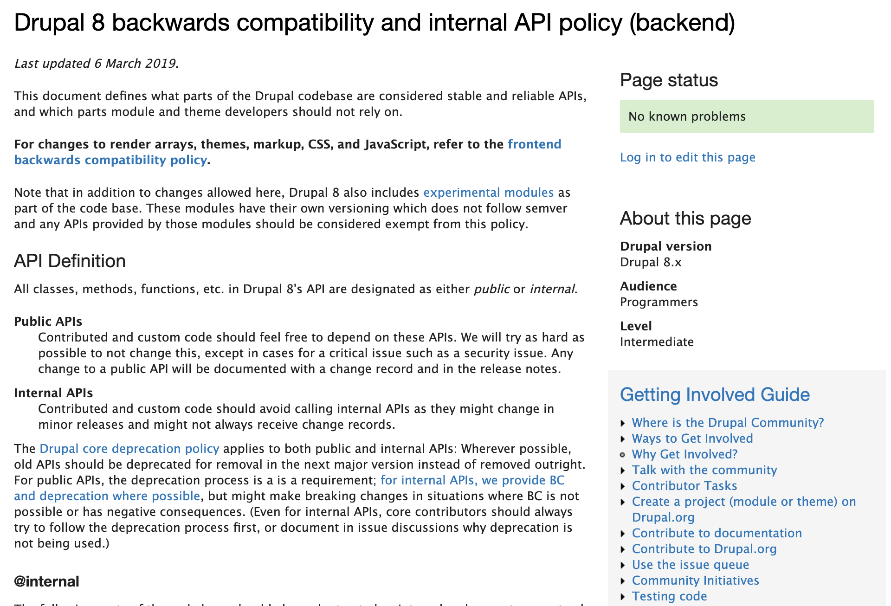
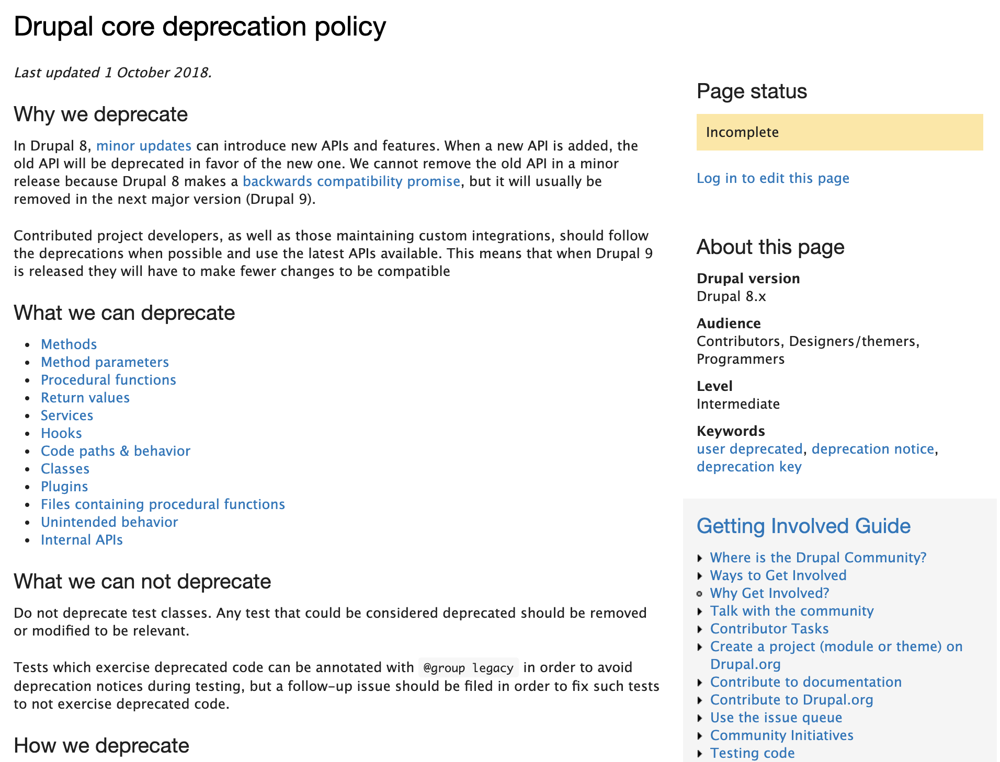

Backwards Compatibility
🆚
Evolvability
🆚
Maintainability
Wim Leers
@wimleers
wimleers.com
Principal Software Engineer, Drupal Acceleration Team ("OCTO"),
Things I learned so I know slightly better what I do not know
I'm responsible for the 👍 & 👎.
 can be used for anything!
can be used for anything!
⬇
All code must have an API to be generic & overridable
but not enough time to carefully design every API
⬇
Overengineered
… yet underengineered!
⬇
BC = nightmare. Let's get better.
We have gotten better! 🥳
BC = promise of updating without problems
buytaert.net/making-drupal-upgrades-easy-forever
- Promise to not breaking existing callers.
- Notify existing callers of changed code.
d.o/core/d8-bc-policy: @api vs @internal
But in Drupal core…
@api- 0 occurrences
@internal- 53 occurrences
99% "undocumented"
⇒ 99% considered API
Two years later:
- More code considered "internal APIs"
For public APIs, the deprecation process is a is a requirement; for internal APIs, we provide BC and deprecation where possible, but might make breaking changes in situations where BC is not possible or has negative consequences.
@deprecated
404
Two years later:
#3024461: Adopt consistent deprecation format for core and contrib deprecation messages
⬇
Challenges
Overengineered
Q: Why does Drupal have so many APIs?
A: Optimized for targeted overrides
⇒ granular APIs
⇒ many, many APIs
- forest ~ Drupal
- tree ~ Drupal component
- branch ~ Drupal component feature
- leaf ~ Drupal component feature method
Drupal allows you to replace a particular leaf.
Others require replacing a branch or even a tree.
Drupal has 3 types of APIs
- Explicit APIs
- hooks, plugins, tagged services
- Implicit APIs
- markup structure, render array structure, call order (weights, priorities)
- Accidental APIs
- many (most?) interfaces (and even classes!)
APIs elsewhere?

The API assumption
- Drupal: X is API
- Others: X is NOT an API
Underengineered
Part 1: Accidental API
- D8: OOPify everything
Every class must have an interface
- Interfaces coupled to the sole implementation
- BC broken by bugfixes & new implementations
Example
Issue #2266809: Make QuickEditEntityFieldAccessCheck::access() use the $account that's passed in
* @param string $field_name
* The field name.
+ * @param \Drupal\Core\Session\AccountInterface $account
+ * The user for which to check access.
*
* @return \Drupal\Core\Access\AccessResultInterface
* The access result.
*/
- public fn accessEditEntityField($entity, $field_name);
+ public fn accessEditEntityField($entity, $field_name, AccountInterface $account);
}
(Introduced by yours truly in #1824500: In-place editing for Fields
on Dec 21, 2012.
Suffering the consequences >4 years later.)
Poorly designed APIs make BC very difficult
API support cost
Prefer duplication over the wrong abstraction
API when:
- data to prove soundness of API design
- sufficient demand
API discoverability & complexity
Little work + high complexity (granular APIs)
vs
More work + low complexity (duplication)
Underengineered
Part 2: orthogonality
[…] how a relatively small number of components can be combined in a relatively small number of ways to get the desired results. It is associated with simplicity; the more orthogonal the design, the fewer exceptions. This makes it easier to learn […]
API dependencies
- Automated Cron: 5 (Form + Config + EventSub + Cron + State)
- BigPipe: 5 (Render + AJAX + Cache + EventSub + Req/Resp)
- Entity API uses >10 APIs
⇒ using Entity API === using >10 APIs!
API cascades
NodeInterface $node
1. NodeInterface extends ContentEntityInterface, EntityChangedInterface, EntityOwnerInterface, RevisionLogInterface, EntityPublishedInterface
2. ContentEntityInterface extends \Traversable, FieldableEntityInterface, RevisionableInterface, TranslatableInterface
3. FieldableEntityInterface extends EntityInterface
4. EntityInterface extends AccessibleInterface, CacheableDependencyInterface, RefinableCacheableDependencyInterface
FieldableEntityInterface::get() aka $node->get($field_name)
1. FieldItemListInterface extends ListInterface, AccessibleInterface
2. ListInterface extends TraversableTypedDataInterface, \ArrayAccess, \Countable
3. TraversableTypedDataInterface extends TypedDataInterface, \Traversable
4. TypedDataInterfaceMassive composition & long inheritance chains require massive knowledge
Underengineered
Part 3: assumptions
- Drupal core does
X - Module/API Foo assumes
X - Install contrib module Bar:
XY - 😭

Breaks when advagg is installed 😭
$request = $this->requestStack->getCurrentRequest();
$link_headers = $request->attributes->get('http2_server_push_link_headers', []);
foreach ($elements as &$element) {
+ if (!static::isLinkRelStylesheet($element)) {
+ continue;
+ }
+
// Locally served CSS files that are sent to all browsers can be pushed.
- if ($element['#tag'] === 'link' && $element['#browsers']['!IE'] === TRUE && $element['#browsers']['IE'] === TRUE && $element['#attributes']['href'][0] === '/' && $element['#attributes']['href'][1] !== '/') {
+ if (isset($element['#attributes']['href']) && static::hasRootRelativeUrl($element, 'href') && static::isUnconditional($element)) {
$link_header_value = '<' . $element['#attributes']['href'] . '>; rel=preload; as=style';
$link_headers[] = $link_header_value;
Make assumptions explicit
even better:
Test assumptions
Extreme one end
REST + Serialization
REST in Drupal 8.0.0
- Only thin happy path test coverage
- Slightest mistake ⇒ incomprehensible errors 😩😨
😵 "serialization gaps" 😵
- #2751325: All serialized values are strings, should be integers/booleans when appropriate
- #2543726: Expose $term->parent in serialized taxonomy terms
- … 6 more in #2852860.
Response === API ⇒ extreme care
When API surface is great, test coverage must be greater
and
Clearly define what is an API (and hence BC guaranteed)
Extreme other end
BigPipe + Dynamic Page Cache
5 issues total for millions of responses accelerated!
@internal all the things!Handful of bugs over the course of a year. 0 bugs last 6 months.
Try hard to not provide an API
(Then BC is kept as long as functionality works!)
Functionality first, API later
or@internalfirst,@apilater
Prefer duplication over the wrong abstraction
Test 1) critical path, 2) edge cases, 3) assumptions
(especially for APIs)
🤐
WHAT DID YOU THINK?
Locate this session at the
DrupalCon Baltimore website:http://baltimore2017.drupal.org/schedule